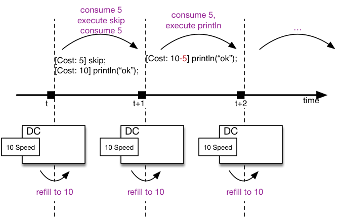
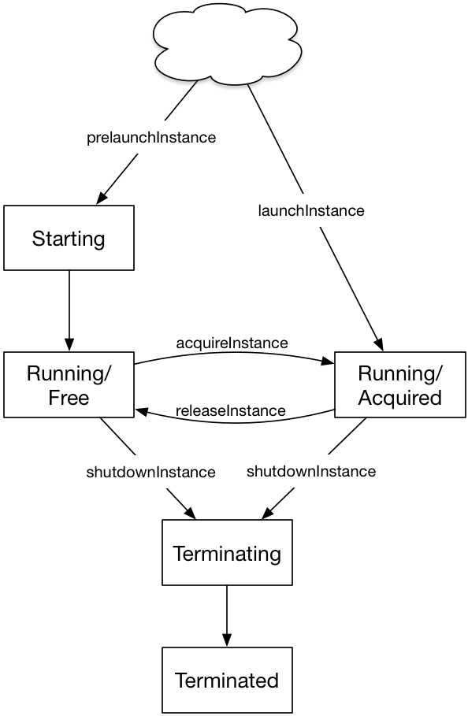

Deployment and resource modeling¶
This chapter describes how to model non-functional properties of systems: code deployment on varying numbers and kinds of machines, and the effects of code locality and different resource types such as CPU speeds, interconnection bandwidth, etc. on the performance of a system.
To simulate the effects of deployment decisions on the cost and performance of running a distributed system, the following aspects need to be added to a model:
A notion of location to describe where different parts of the system will run
A notion of cost of executing code on such locations; and finally
A notion of time that allows us to observe the effects of varying the location and cost.
In ABS, the following language elements implement these aspects:
- Deployment Components
ABS cogs can be created on a deployment component (see Deployment components). Deployment components have a limited number of resources available.
- Resource Annotations
ABS statements can be annotated with resource costs (see Resource types). Executing such annotated statements incurs resource costs.
- Timed ABS
The time model of Section Timed ABS naturally extends to observations on resource usage.
These elements work together as in Figure Resource Consumption:

Resource Consumption¶
The figure shows a process with a skip statement with an
associated cost of 5, followed by a println statement with a cost
of 10. The deployment component DC has 10 resources available in
each time interval.
At time t, the skip statement consumes the five needed
resources and is successfully executed. The println statement
consumes the remaining five resources but is not executed yet.
At time t+1, the deployment component’s resources are refilled.
The five remaining resources of the println statement are consumed
and the statement is executed. The five remaining resources of DC
are not used.
At time t+2, the deployment component’s resources are again
refilled to 10.
The rest of this chapter explains these language elements concerning
resource modeling in detail. All identifiers introduced in this
section reside in the ABS.DC module; they are not imported into
other modules by default.
Deployment components¶
In ABS, processes run inside cogs. Deployment components are used to provide a location to cogs. Cogs residing on the same deployment component share the resources provided by the deployment component.
Deployment Components are first-class constructs in the ABS language.
References to deployment components can be stored in variables of type
DeploymentComponent, and the methods documented in this section
can be called via asynchronous method calls.
Deployment Components are usually created by a cloud provider instance
(see The CloudProvider API), but can also be created using the new
expression. A new cog is created on a given deployment component by
using a DC annotation to the new statement.
If no DC annotation is given for a new statement, the fresh
cog (and its first object) are created on the same deployment
component as the current cog.
Note
It is an error to try to create a deployment component via
new local.
Example:
DeploymentComponent dc = await provider!launchInstance(map[Pair(Speed, 10)]); ①
[DC: dc] Worker w = new CWorker(); ②
provider creates a new deployment component
dc with 10 Speed resourcesCWorker object is created on the new
deployment component dcNote
All objects of a cog must reside on the same deployment
component, i.e., [DC: x] new local C() is an error.
As seen above, each deployment component “carries” some amount of
resources for each resource type. This is expressed as a map from
resource type to a number, for example map[Pair(Speed, 10),
Pair(Bandwidth, 20)]. When no amount is given for some resource
type, it is infinite. See Resource types for a description of the
available resource types.
Methods¶
load¶
Return the load (0-100) for the given resource type rtype over the
last \(n\) periods. If the deployment component was created with
infinite resources for the given resource type, load returns 0.
[Atomic] Rat load(Resourcetype rtype, Int periods)
total¶
Return the total available amount for the given resourcetype. If the
deployment component was created with infinite resources for the given
resource type, total returns InfRat, otherwise Fin(value).
[Atomic] InfRat total(Resourcetype rtype)
decrementResources¶
Decrease the total available amount for the resourcetype rtype by
amount from the next time interval onwards. Trying to decrement
infinite resources has no effect. Trying to decrement by more than
available will decrement the maximum amount possible but not below
zero. Returns the amount by which the resource was decreased.
[Atomic] Rat decrementResources(Rat amount, Resourcetype rtype)
incrementResources¶
Increase the total available amount for the resourcetype rtype by
amount from the next time interval onwards. Trying to increment
infinite resources has no effect. Returns the amount by which the
resource was increased.
[Atomic] Rat incrementResources(Rat amount, Resourcetype rtype)
transfer¶
Transfer amount resources of type rtype from the current
deployment component to target. Takes effect on the next time
period. Returns the amount transferred, which will be lower than
amount in case the deployment component has less resources
available.
(This method is implemented via decrementResources and
incrementResources.)
[Atomic] Rat transfer(DeploymentComponent target, Rat amount, Resourcetype rtype)
getName¶
Returns the name of the deployment component. Deployment components
created via a CloudProvider are guaranteed to have a unique name
if no two cloud providers have the same name.
[Atomic] String getName()
getCreationTime¶
Get the creation time of the deployment component, i.e., the value of
now() at the time of creation of the component.
[Atomic] Time getCreationTime()
getStartupDuration¶
Get the specified startup duration, or 0 if none specified.
[Atomic] Rat getStartupDuration()
getShutdownDuration¶
Get the specified shutdown duration, or 0 if none specified.
[Atomic] Rat getShutdownDuration()
getPaymentInterval¶
Get the specified payment interval, or 1 if none specified.
[Atomic] Int getPaymentInterval()
getCostPerInterval¶
Get the specified cost (price) per interval, or 0 if none specified.
[Atomic] Rat getCostPerInterval()
shutdown¶
Shut down the deployment component. It is an error to create a new object on a deployment component that has been shutdown, or to invoke a method on an object residing on a deployment component that has been shut down.
Bool shutdown()
getProvider¶
Get the cloud provider that manages this deployment component. Returns null
if the deployment component was not created by a cloud provider. See
The CloudProvider API for a discussion of cloud providers.
[Atomic] CloudProvider getProvider()
acquire¶
Convenience method for calling acquireInstance of the associated
cloud provider. If no cloud provider is set, returns True. See
The CloudProvider API for a discussion of cloud providers.
Bool acquire()
release¶
Convenience method for calling releaseInstance of the associated
cloud provider. If no cloud provider is set, returns True. See
The CloudProvider API for a discussion of cloud providers.
Bool release()
Resource types¶
The term “Resource” can be understood in different ways. In ABS, we define “Resource” to be a countable, measurable property of a deployment component. Some resources stay constant throughout the life of a deployment component (e.g., the number of cores), some others are influenced by program execution (e.g., the available bandwidth in the current time slot).
The resource types currently supported by the ABS language are defined
in the ABS.DC module as follows:
data Resourcetype = Speed | Bandwidth | Memory | Cores ;
When a deployment component is created without explicitly giving a value for a resource type, it is assumed to have an infinite amount of that resource. E.g., for the purpose of modeling a denial of service attack, the deployment component running the attacker code will have infinite speed and bandwidth.
Speed¶
The Speed resource type models execution speed. Intuitively, a
deployment component with twice the number of Speed resources will
execute twice as fast. Speed resources are consumed when execution in
the current process reaches a statement that is annotated with a
Cost annotation:
Time t1 = now();
[Cost: 5] skip;
Time t2 = now();
Executing the above skip statement will consume 5 Speed resources
from the deployment component where the cog was deployed. If the
deployment component does not have infinite Speed resources, executing
the skip statement might take an observable amount of time, i.e.,
t1 and t2 might be different.
Bandwidth¶
Bandwidth is a measure of transmission speed. Bandwidth resources are
consumed during method invocation and return statements. No
bandwidth is consumed if sender and receiver reside on the same
deployment component.
Bandwidth consumption is expressed via a DataSize annotation:
Time t1 = now();
[DataSize: 2 * length(datalist)] o!process(datalist);
Time t2 = now();
Executing the above method invocation statement will consume bandwidth
resources proportional to the length of list datalist.
Memory¶
The Memory resource type abstracts from the size of main memory,
as a measure of how many and which cogs can be created on a deployment
component. In contrast to bandwidth and speed, memory does not
influence the timed behavior of the simulation of an ABS model; it is
used for static deployment modeling.
It is planned to implement memory semantics by annotating methods with the amount of memory required to start one process running that method; under simulated memory pressure, creation of processes from incoming method calls would be delayed until another process terminated and freed enough memory to create a new process.
Cores¶
The Cores resource type expresses the number of CPU cores on a
deployment component. It is used for static deployment decisions and
does not have influence on the timing behavior of simulations (use the
Speed resource type for this purpose).
Modeling resource usage¶
As described above, resource information is added to statements of an
ABS model using Cost and DataSize annotations. Executing such
annotated statements causes observable changes in the simulated time
and deployment component load during simulation.
Example:
module Test;
import * from ABS.DC; ①
interface I {
Unit process();
}
class C implements I {
Unit process() {
[Cost: 10] skip; ②
}
{
DeploymentComponent dc = new DeploymentComponent("Server",
map[Pair(Speed, 5), Pair(Bandwidth, 10)]);
[DC: dc] I i = new C();
[DataSize: 5] i!process(); ③
}
Speed units; the time needed
depends on the capacity of the deployment component, and on other
cogs executing in parallel on the same deployment component.dc has 10 bandwidth resources per time unit, the message will be
transported instantly. Executing the skip statement in the
method body will not finish instantaneously because dc only has
5 Speed resources in total.The CloudProvider API¶
Deployment components can be managed by a Cloud Provider instance.
The Cloud Provider implements the life cycle shown in Figure
Deployment Component lifecycle. A deployment component is managed by
a cloud provider if it was created via one of the launchInstance
methods.
Modeling deployment container allocation and deallocation using cloud provider instances is useful for modeling and simulating the cost (as in money) of running a system involving machines of various sizes and costs.

Deployment Component lifecycle¶
The operations supported by deployment components during their lifecycle are summarized in Table Deployment Component Lifecycle.
State |
Starting |
Running |
Terminating |
Terminated |
Create objects |
delayed |
yes |
no |
no |
Invoke methods |
delayed |
yes |
no |
no |
Process keep running |
yes |
yes/no |
Using the cloud provider¶
To use deployment components via a cloud provider, follow these steps:
Create a
CloudProviderinstanceSet the instance descriptions via the
setInstanceDescriptionsmethodCreate deployment components using the
launchInstanceNamedmethod(optional) Manage access via
releaseInstance/acquireInstance(optional) Release deployment components via
shutdownInstance
module ProviderDemo;
import * from ABS.DC;
{
CloudProvider p = new CloudProvider("Amazon");
await p!setInstanceDescriptions(
map[Pair("T2_MICRO", map[Pair(Memory,1), Pair(Speed,1)]),
Pair("T2_SMALL", map[Pair(Memory,2), Pair(Speed,1)]),
Pair("T2_MEDIUM", map[Pair(Memory,4), Pair(Speed,2)]),
Pair("M4_LARGE", map[Pair(Memory,8), Pair(Speed,2)])]);
DeploymentComponent dc = await p!launchInstanceNamed("T2_SMALL");
// ... use the deployment component ...
}
Datatypes and constructors¶
The type for cloud provider instances is ABS.DC.CloudProvider.
Cloud provider instances are created with a new CloudProvider(String
name) expression. It is not mandatory but recommended that each
cloud provider instance has a unique name.
It is recommended to call setInstanceDescriptions once after
creating a cloud provider to set the list of named instance types that
this cloud provider offers.
Methods¶
setInstanceDescriptions¶
This method sets the named instance configurations that the cloud
provider instance should support. These names are used in the methods
launchInstanceNamed and prelaunchInstanceNamed.
[Atomic] Unit setInstanceDescriptions(Map<String, Map<Resourcetype, Rat>> instanceDescriptions);
getInstanceDescriptions¶
This method returns the map of named instance configurations.
[Atomic] Map<String, Map<Resourcetype, Rat>> getInstanceDescriptions();
launchInstanceNamed¶
This method creates and returns a new deployment component with a
resource configuration corresponding to instancename, as set by
the setInstanceDescriptions method. If no description for
instancename exists, launchInstanceNamed returns null.
DeploymentComponent launchInstanceNamed(String instancename);
The name of the new deployment component will be "<Cloud provider
name>-<instancename>-<Counter>", i.e., a concatenation of the name
of the cloud provider itself, the instance name, and a unique integer
as suffix.
If the instance description specifies a startup duration,
launchInstanceNamed will only return after that amount of
simulated time has elapsed.
The returned deployment component will be acquired (as per
acquireInstance) and can be used immediately.
prelaunchInstanceNamed¶
This method creates and returns a new deployment component with a
resource configuration corresponding to instancename, as set by
the setInstanceDescriptions method. If no description for
instancename exists, prelaunchInstanceNamed returns null.
DeploymentComponent prelaunchInstanceNamed(String instancename);
As with launchInstance, the name of the new deployment component
will be "<Cloud provider name>-<instancename>-<Counter>", i.e., a
concatenation of the name of the cloud provider itself, the instance
name, and a unique integer as suffix.
The method prelaunchInstanceNamed returns immediately, but the
method acquireInstance, when called on the returned deployment
component, will not return before its startup duration (if specified)
has elapsed.
The returned deployment component needs to be acquired (as per
acquireInstance) before it can be used.
launchInstance¶
The launchInstance method creates and returns a new deployment
component with the specified resource configuration. It can be used
when, for whatever reason, the resource configuration should not be
registered with the cloud provider, but the deployment component
should still be managed by it.
DeploymentComponent launchInstance(Map<Resourcetype, Rat> description);
The name of the new deployment component will be "<Cloud provider
name>-<Counter>", i.e., a concatenation of the name of the cloud
provider itself and a unique integer as suffix.
If the resource configuration specifies a startup duration,
launchInstanceNamed will only return after that amount of
simulated time has elapsed.
The returned deployment component will be acquired (as per
acquireInstance) and can be used immediately.
prelaunchInstance¶
This method creates and returns a new deployment component with the
specified resource configuration. As with launchInstance, this
method can be used when, for whatever reason, the resource
configuration should not be registered with the cloud provider, but
the deployment component should still be managed by it.
DeploymentComponent prelaunchInstance(Map<Resourcetype, Rat> d)
The name of the new deployment component will be "<Cloud provider
name>-<Counter>", i.e., a concatenation of the name of the cloud
provider itself and a unique integer as suffix.
The method prelaunchInstance returns immediately, but the method
acquireInstance, when called on the returned deployment component,
will not return before its startup duration (if specified) has
elapsed.
The returned deployment component needs to be acquired (as per
acquireInstance) before it can be used.
acquireInstance¶
This method, together with releaseInstance, implements exclusive
access to a deployment component. After acquireInstance returns
true, all further invocations will return false until
releaseInstance is called for the deployment component.
Bool acquireInstance(DeploymentComponent instance);
If the deployment component passed as argument was not created by the cloud provider, the method returns false.
Note
The methods acquireInstance and releaseInstance are
used to implement exclusive access in a cooperative
manner. Attempting to create a cog on a deployment
component without having acquired it beforehand will not
lead to a runtime error; ensuring exclusive access to
deployment components is the responsibility of the modeler.
releaseInstance¶
This method releases the deployment component, such that the next call
to acquireInstance will return true.
Bool releaseInstance(DeploymentComponent instance);
This method returns true if the deployment component was successfully released. It returns false if the deployment component was already not acquired.
If the deployment component passed as argument was not created by the cloud provider, the method returns false.
shutdownInstance¶
This method shuts down a deployment component. The effect on the cogs, objects and running tasks deployed on that deployment component are backend-specific.
Bool shutdownInstance(DeploymentComponent instance);
[Atomic] Rat getAccumulatedCost();
[Atomic] Map<String, Map<Resourcetype, Rat>> getInstanceDescriptions();